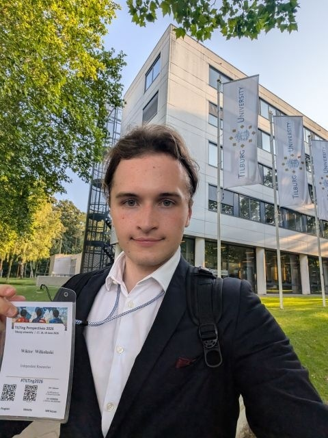
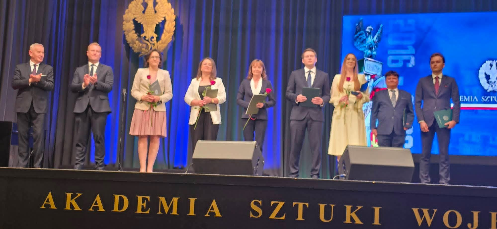
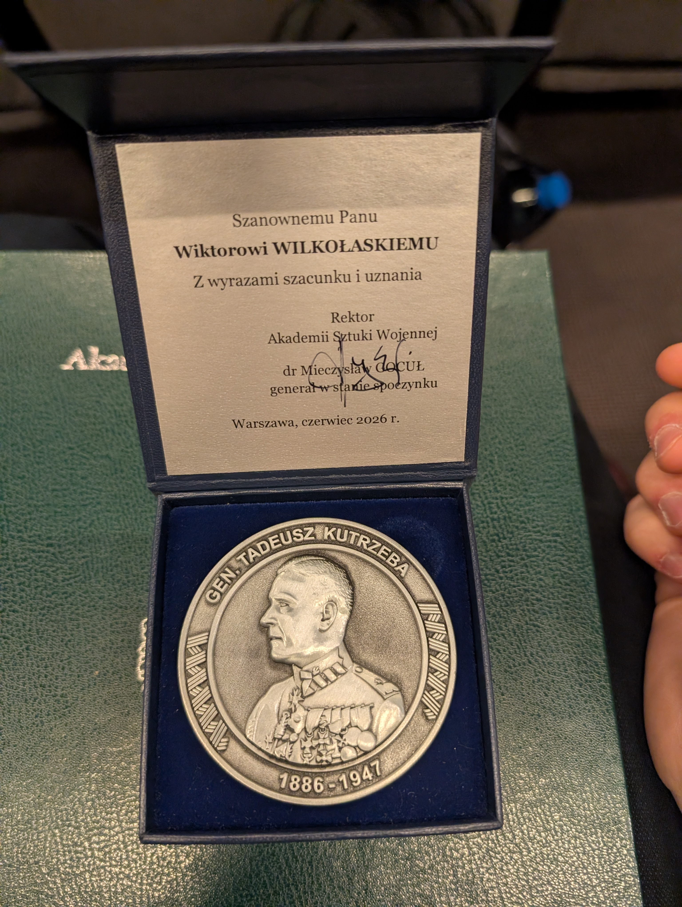
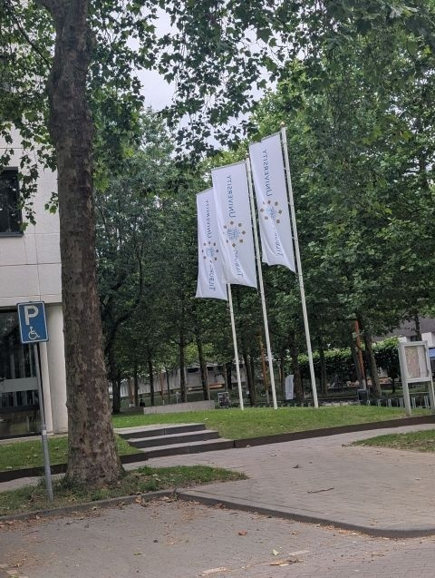
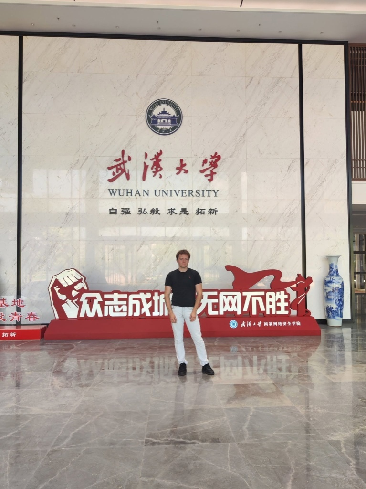

I am an independent Deep Tech Law & Cybersecurity Researcher based in Warsaw, currently serving as V-CEO and Co-Founder at the "SAVE THE CLICK" Foundation. My work operates at the high-friction interface of advanced cryptographic physics, national security paradigms, and international regulatory frameworks.
My academic architecture is built on an Individually Accelerated Degree Pathway at the War Studies University, condensing a two-year standard legal curriculum into a single calendar year. This involves the concurrent execution of advanced modules spanning the 3rd, 4th, and 5th years of the long-cycle Master of Laws (LL.M.) program (maintaining top percentile academic standing, on track for summa cum laude). My development is structured within an individual mentoring framework focusing on state-level cyber capabilities, European Union digital legislation, and international legal tech strategy.

Core Research Agenda
Rather than analyzing retroactive case law, my research focus is predictive and stress-test-driven, concentrating on three primary pillars:
- Liability Based on Deterministic Risk: Formalizing legal standing and tort metrics for the "Harvest Now, Decrypt Later" (HNDL) exfiltration vector before physical decryption capabilities (Q-Day) materialize.
- Distributed System Asymmetries: Analyzing the systemic gap between decentralized processing tech (e.g., Federated Machine Learning) and updated liability structures like the Revised Product Liability Directive (PLD).
- Gaming Ecosystem Governance: Investigating the legal boundaries of aggressive kernel-level surveillance (Anti-Cheat systems), digital platform Terms of Service (ToS), and transnational e-sports jurisdictional governance. This vector is backed by firsthand experience as a former professional Fortnite athlete (Ranked #1 in Poland, #187 globally).
Selected Publications & Proceedings
-
[ UPCOMING: JUL 2026 ]
Badźmirowska-Masłowska K., Wilkołaski W., "Quantum Cybercrime: Challenges in the Age of Advancing Quantum Computing Across the European Union, United States of America, and People's Republic of China." Science of Cyber Security, Lecture Notes in Computer Science (LNCS), Springer Nature. [Double-Blind Peer-Reviewed] -
[ UPCOMING: AUG 2026 ]
Wilkołaski W., "Reconstructing Liability in Distributed Architectures: The Revised Product Liability Directive vs. Federated Machine Learning." IFIP Summer School on Privacy and Data Management, KU Leuven. [Double-Blind Peer-Reviewed] -
[ UPCOMING: SEPT 2026 ]
Wilkołaski W. (Presenting Author), Badźmirowska-Masłowska K., "Quantum Cyberspace Bifurcation. A Comparative Analysis of Regulatory Approaches to Quantum Technologies." TPRC54: Research Conference on Communication, Information and Internet Policy, Washington DC. [Main Track / Extended Abstract Accepted] -
[ COMPLETED: JUN 2026 - Full Paper Incoming ]
Wilkołaski W., "The 'Quantum Paradox' and 'Liability Based on Deterministic Risk': Examining Liability for Data Breach, Duty of Care, and Retroactivity in the EU, US, and PRC." Tilting Perspectives Conference 2026. Full Paper sent to the Technology and Regulation (TechReg) Special Issue. [Strong Accept] -
[ ACCEPTED & (Would Be) PUBLISHED ]
Wilkołaski W., "Legal Lacunae - Modern Cyber Threats Targeting International Aviation Beyond the Scope of the Beijing Convention." Cybersecurity and Law Journal, 2026. [Accepted without changes]
Fieldwork Logs & Research Sites




